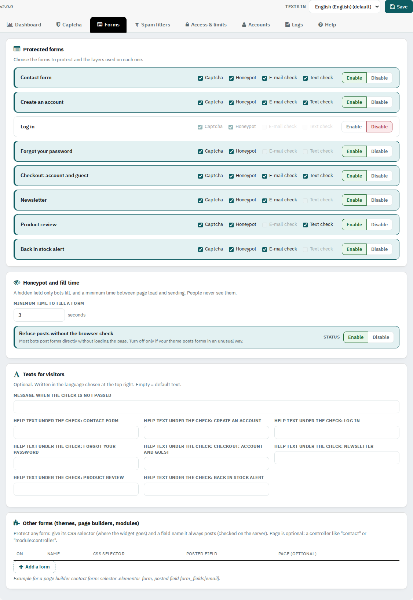
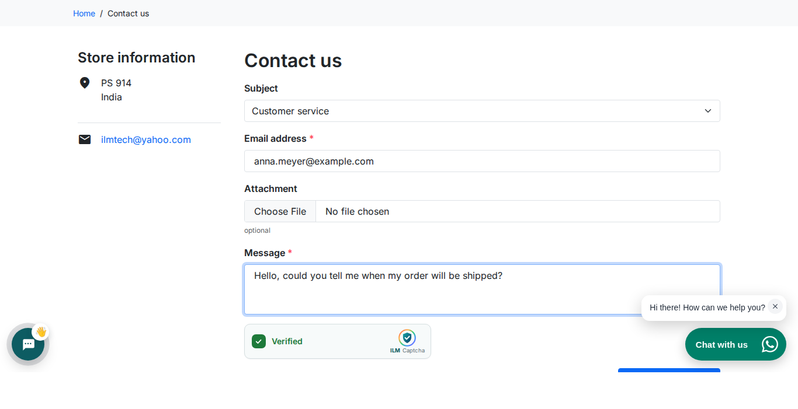
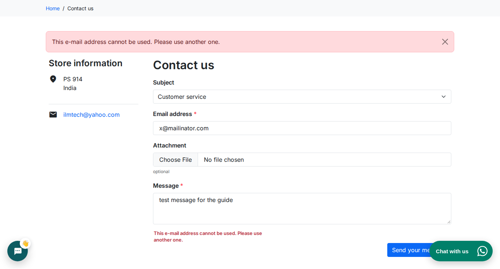

Turn each shop form on or off, choose its layers, and protect forms of your theme, page builder or other modules.

Each form has Enable / Disable and four layers: Captcha, Honeypot (hidden checks), E-mail check and Text check. The forms are: Contact form, Create an account, Log in, Forgot your password, Checkout (account and guest), Newsletter, Product review and Back in stock alert.
Choosing a new password from the reset link is never checked, so customers can always finish a password reset.
A hidden field that only bots fill, and a minimum time between opening the page and sending (3 seconds by default). Refuse posts without the browser check stops bots that send the form without opening the page.
Optional: the message when the check is not passed, and a help text under the check of each form, in every language.
Protect any other form: give its CSS selector (where the check is placed) and the name of a field the form always sends (checked on the server). Page is optional, for example contact or module:controller. Example for a page builder contact form: selector .elementor-form, posted field form_fields[email].

When a send is refused, the form is shown again with the visitor's text kept and the reason under the check.
